1. Introducción a los Números Enteros
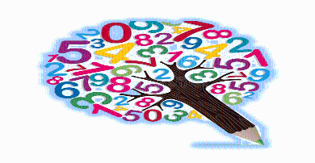
Los números naturales () que hemos estudiado previamente, se pueden usar para describir muchas situaciones que surgen en la vida cotidiana. Sin embargo, no podemos usar los mismos para expresar temperaturas bajo cero, las cifras de una cuenta corriente que tiene saldo negativo o qué tan lejos está un objeto por debajo del nivel del mar. En esta sección, veremos cómo se pueden usar los números negativos para describir las situaciones antes enunciadas.
Objetivos
• Definir el conjunto de los números Enteros.
• Graficar números Enteros en una recta numérica y establecer la relación de orden.
• Encontrar el valor absoluto de un número Entero.
• Encontrar el opuesto de un número Entero.
1.1 Definir el conjunto de los números Enteros

Para describir una temperatura de  grados sobre cero, un saldo de 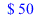 o
grados sobre cero, un saldo de 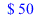 o  pies sobre el nivel del mar, podemos usar enteros positivos. Todos los números positivos son mayores que
pies sobre el nivel del mar, podemos usar enteros positivos. Todos los números positivos son mayores que  , y podemos escribirlos con o sin signo más.
, y podemos escribirlos con o sin signo más.
En palabras |
En símbolos |
Se lee |
|
o |
Dos positivo. |
Un saldo de 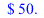 |
|
Cincuenta positivo. |
|
|
Seiscientos positivo. |

Para describir una temperatura de 2 grados bajo cero, $50 en descubierto o 600 pies bajo el nivel del mar, necesitamos usar números negativos. Los números negativos son números menores que 0 y se escriben con el signo negativo.
En palabras |
En símbolos |
Se lee |
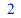 Grados bajo cero. |
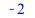 |
Dos negativo. |
de sobregiro. |
|
Cincuenta negativo. |
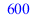Pies bajo el nivel del mar. |
|
Seiscientos negativo. |

Números positivos y negativos |
Los números positivos son mayores que |
¡Precaución! El cero no es ni positivo ni negativo.
La colección de números enteros positivos, los negativos de los números enteros y el 0 se llama el "conjunto de números enteros"
El conjunto de números Enteros |
|
Los tres puntos a la derecha indican que la lista continúa hasta el infinito, de la misma manera los tres puntos a la izquierda indican que la lista inicia en menos infinito. El conjunto de enteros positivos es 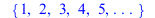 y el conjunto de enteros negativos es .

El lenguaje de las matemáticas
Dado que todo número natural es un número entero, decimos que el conjunto de los números naturales es un subconjunto de los números enteros.
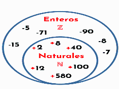
1.2 Graficar números Enteros en una recta numérica y establecer la relación de orden.
1.2.1 Gráfica de números Enteros
Los números negativos se pueden representar en una recta numérica extendiendo la misma hacia la izquierda y dibujando una punta de flecha. Comenzando en el origen (el punto 0), nos movemos hacia la izquierda, marcando puntos igualmente espaciados como se muestra a continuación. A medida que nos movemos hacia la derecha en la recta numérica, los valores de los números aumentan. A medida que nos movemos hacia la izquierda, los valores de los números disminuyen.
 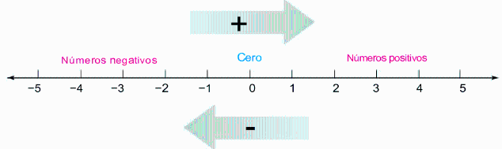
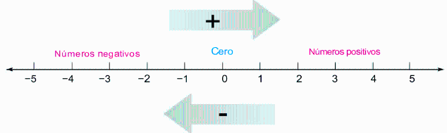

El termómetro que se muestra a continuación es un ejemplo de una recta numérica vertical.
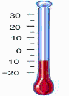
EJEMPLO 1.2.1
Grafica 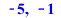 y en la recta numérica. Para el efecto utilizamos el Simulador PHET ¨Recta Numérica Enteros¨

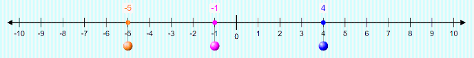
Estrategia:
En el simulador activar o desactivar etiquetas, mover los controles deslizantes o cambiar la configuración hasta comprender los conceptos.
¿Por qué?
Graficar un número significa hacer un dibujo que le represente al mismo.
Solución
La posición de cada entero negativo está a la izquierda de  . La posición de cada entero positivo está a la derecha de
. La posición de cada entero positivo está a la derecha de  .
.
1.2.2 Usar los símbolos de desigualdad para comparar números Enteros.

Recuerda que el símbolo significa “es menor que”, y el símbolo 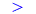 significa “es mayor que”. La siguiente figura muestra la gráfica de los números enteros de  y . en razón de que
y . en razón de que  se encuentra ala izquierda del 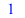en la recta numérica, entonces 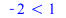de la misma manera se cumple que 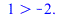`(1, -2.); "_noterminate" align="center" border="0">
se encuentra ala izquierda del 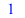en la recta numérica, entonces 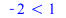de la misma manera se cumple que 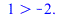`(1, -2.); "_noterminate" align="center" border="0">

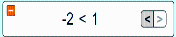
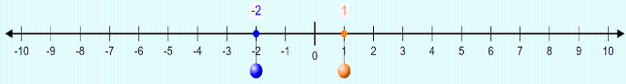
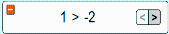

EJEMPLO 1.2.2
Ubica el símbolo o que en los puntos suspensivos para que la declaración sea verdadera.
a)  ........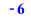 b) .....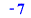.
........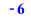 b) .....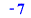.
Estrategia:
Para elegir el símbolo de desigualdad correcto para colocar entre el par de números, determinaremos la posición de cada número en la recta numérica.
¿Por qué?
Para dos números cualesquiera en una recta numérica, el número de la izquierda es el número más pequeño y el número de la derecha es el número más grande.
Solución:
a) Dado que menos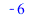 se encuentra a la izquierda del  , entonces: 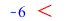
, entonces: 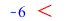 o 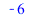
o 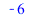
b) Dado que se encuentra a la izquierda de
se encuentra a la izquierda de  , entonces: 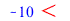o
, entonces: 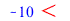o 

El lenguaje de las matemáticas
Debido a que el símbolo  requiere que un número sea estrictamente menor que otro número y el símbolo requiere que un número sea estrictamente mayor que otro número, los enunciados matemáticos que involucran los símbolos
requiere que un número sea estrictamente menor que otro número y el símbolo requiere que un número sea estrictamente mayor que otro número, los enunciados matemáticos que involucran los símbolos  y
y  se denominan desigualdades estrictas.
se denominan desigualdades estrictas.
Hay otros tres símbolos de desigualdad de uso común como son:
Símbolos de desigualdad |
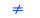significa "no es igual a..." 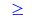significa "es mayor o igual a..." 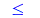 significa "es menor o igual a..." |
En símbolos |
Se lee |
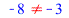`(-8, -3); "_noterminate" align="center" border="0"> |
Se lee como "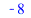 no es igual a 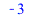" |
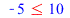 |
Se lee como "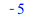 es menor o igual que |
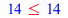 |
Se lee como "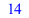 es menor o igual que ". |
=`(-15, -17); "_noterminate" align="center" border="0"> |
Se lee como " es mayor o igual a ". |
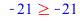=`(-21, -21); "_noterminate" align="center" border="0"> |
Se lee como "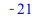 es mayor o igual a |
EJEMPLO 1.2.3
Indica si cada afirmación es verdadera o falsa.
a) 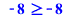=`(-8, -8); "_noterminate" align="center" border="0"> b) c) 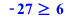=`(-27, 6); "_noterminate" align="center" border="0"> d) 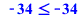

Estrategia:
Determinaremos si es cierta la desigualdad estricta o la igualdad que permiten los símbolos.
¿Por qué?
Si cualquiera de las dos es verdadera, entonces la declaración dada es verdadera.
Solución
a) 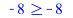=`(-8, -8); "_noterminate" align="center" border="0"> Esta afirmación es verdadera, porque 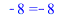
b) 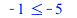Esta afirmación es falsa, porque ni 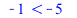ni
c) =`(-27, 6); "_noterminate" align="center" border="0">Esta afirmación es falsa, porque ni `(-27, -6); "_noterminate" align="center" border="0">ni
d) Esta afirmación es verdadera, porque
1.3 Encuentra el valor absoluto de un número Entero.
Usando una recta numérica utilizamos el Simulador PHET ¨Recta Numérica Enteros¨ , podemos ver que los números  y
y  están a una distancia de de unidades del
están a una distancia de de unidades del  , como se muestra a continuación:
, como se muestra a continuación:
El valor absoluto de un número es la distancia entre el número dado y el  en la recta numérica. Para indicar el valor absoluto, el número se inserta entre dos barras verticales llamado símbolo de valor absoluto. Por ejemplo, podemos escribir , Esto se lee como "El valor absoluto de menos es ", y nos dice que la distancia entre el
en la recta numérica. Para indicar el valor absoluto, el número se inserta entre dos barras verticales llamado símbolo de valor absoluto. Por ejemplo, podemos escribir , Esto se lee como "El valor absoluto de menos es ", y nos dice que la distancia entre el  y el
y el  en la recta numérica es de
en la recta numérica es de  unidades. De la figura anterior observamos que valor absoluto de unidades.
unidades. De la figura anterior observamos que valor absoluto de unidades.
Valor absoluto |
El valor absoluto de un número es la distancia en la recta numérica entre el número y el |
¡Recuerda que!
El valor absoluto expresa la distancia, que siempre sera positivo o  . Nunca sera negativo.
. Nunca sera negativo.
EJEMPLO 1.3.1
Hallar el valor absoluto utilizando el Simulador PHET ¨Recta Numérica Enteros¨
a) b) c)

Estrategia:
Necesitamos determinar la distancia que hay entre el número dado dentro de las barras verticales al igual que valor absoluto teniendo muy en cuenta el  en la recta numérica del simulador PHET.
en la recta numérica del simulador PHET.
¿Por qué?
El valor absoluto de un número es la distancia entre  y el número dado en la recta numérica.
y el número dado en la recta numérica.
Solución:
a) En la recta numérica, la distancia entre y  es unidades. Por lo tanto:
es unidades. Por lo tanto:
b) En la recta numérica, la distancia entre y  es unidades. Por lo tanto:
es unidades. Por lo tanto:
c) En la recta numérica, la distancia entre  y
y  es unidades. Por lo tanto
es unidades. Por lo tanto
1.4 Encontrar el opuesto de un número Entero.
Comenzemos entendiendo la siguiente definicón.

Opuestos o Negativos |
Se llaman opuestos o negativos a dos números que están a la misma distancia del |
La siguiente figura muestra que para cada número entero en la recta numérica hay un número opuesto, a la izquierda de  . Por ejemplo vemos que y
. Por ejemplo vemos que y  son opuestos, como también lo son: y
son opuestos, como también lo son: y  .
.
Para escribir el opuesto de un número, se usa un símbolo . Por ejemplo, lo contrario de (léase como “negativo”) es . Los paréntesis son necesarios para expresar lo contrario de un número negativo. El opuesto de se escribe como: . Desde el al
al  como desde el
como desde el  al
al  hay la misma distancia, es decir, el opuesto de
hay la misma distancia, es decir, el opuesto de  es
es  . Como se ilustra la siguiente imagen:
. Como se ilustra la siguiente imagen:
El opuesto de la regla opuesta |
El opuesto del opuesto (o negativo) de un número es ese número. |
Número |
Opuesto |
Se lee |
|
|
Se lee como "el opuesto de cincuenta y nueve es cincuenta y nueve negativo". |
|
|
Se lee como "el opuesto de menos diez es diez". |
|
|
Se lee como "el opuesto de cero es es cero ". |
El concepto de opuesto también se aplica a un valor absoluto. Por ejemplo, el opuesto del valor absoluto  que puede realizarse como un proceso por pasos donde el símbolo del valor absoluto sirve como símbolo de agrupación, para este caso encontramos primero el valor absoluto y luego adjunte un signo a ese resultado es .
que puede realizarse como un proceso por pasos donde el símbolo del valor absoluto sirve como símbolo de agrupación, para este caso encontramos primero el valor absoluto y luego adjunte un signo a ese resultado es .

EJEMPLO 1.4.1
Simplifica cada expresión:
a) b) c)

Estrategia:
Encontraremos el opuesto de cada número.
¿Por qué?
En cada caso, el símbolo escrito fuera de los símbolos de agrupación significa “lo opuesto a”.
Solución:
a) significa lo contrario de , dado que lo contrario de  es escribimos:
es escribimos:
b) significa el opuesto del valor absoluto de  , dado que y como el opuesto de
, dado que y como el opuesto de  es escribimos:
es escribimos:
c) significa el opuesto del valor absoluto de , dado que y como el opuesto de es  escribimos:
escribimos:

Lectura del símbolo negativo |
|